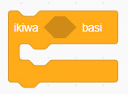
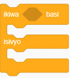

Muundo wa kudhibiti maamuzi
Baadhi ya kazi zinahitaji programu kuchagua kati ya vitendo tofauti kulingana na sharti fulani. Katika usimbaji, hili hujulikana kama uamuzi au uchaguzi. Rejea kazi zifuatazo katika mchezo.
Kazi hizi zote zinahitaji programu kufanya maamuzi. Katika kazi ya kwanza, programu ina chaguo moja, kubadilisha rangi ikiwa ukingo utaguswa. Katika kazi ya pili, programu ina chaguzi mbili, kusema Namba ni shufwa au Namba ni witiri. Ili kufanya maamuzi rahisi katika Scratch, bloku ya ikiwa ( ) basi inatumika. Vivyo hivyo, ili kuchagua kati ya chaguzi mbili, bloku ya ikiwa ( ) basi isivyo inatumika. Angalia Kielelezo namba 10.


Ili programu iweze kufanya uamuzi, inahitaji taarifa ya awali. Taarifa hii inajulikana kama sharti kwa ajili ya muundo wa udhibiti wa maamuzi, na huwekwa kwenye umbo la pembe sita lililopo juu ya bloku la maamuzi.